PDS - TP Nº2 (Parte 1) - Sofía Ayelén Varela
Contents
Ejercicio 3
L=10;
a=zeros(1,L);
a(1)=1;
a(2)=-1/2;
a(3:L)=0;
N=0:L-1; %vector largo L
%Gráfico de la secuencia figure subplot(2,1,1) stem(N,a,'m') title('Señal de entrada');xlabel('n');ylabel('a[n]') A=fft(a); %Transformada Discreta de Fourier A=A.^(-1); %Inversa b=ifft(A); %Antitransformada c=conv(a,b); %Convolución: debe dar un delta como resultado n=0:18; %Largo N+M-1 de la convolución %Gráfico de la convolución entre la señal y su inversa subplot(2,1,2) stem(n,c,'r') title('Convolución de la secuencia con su inversa');xlabel('n');ylabel('Conv[n]')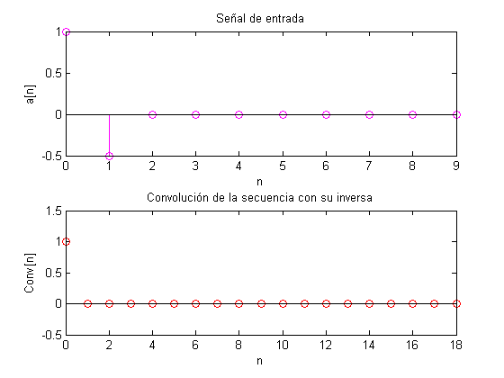
Ejercicio 4
a=[2 5 3]; n=0:2; figure subplot(3,1,1) stem(n,a,'c') title('Señal de entrada');xlabel('n');ylabel('a[n]') %Sobremuestreo L=2; [y,N]=Sobremuestrear(a,L); subplot(3,1,2) stem(N,y,'m') title('Señal sobremuestreada con algoritmo propio');xlabel('n');ylabel('y[n]') %Verifico algoritmo propio con rutina prediseñada de Matlab 'upsample' ymat=upsample(a,2); subplot(3,1,3) stem(N,y,'r') title('Señal sobremuestreada con función upsample');xlabel('n');ylabel('y[n]')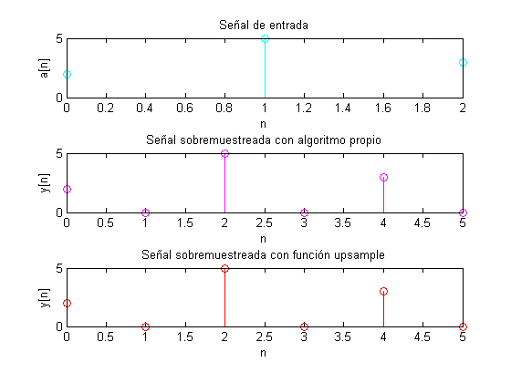
Ejercicio 5
a=[1 3 5 7 9 8 6]; l=0:6; figure subplot(3,1,1) stem(l,a,'c') title('Señal de entrada');xlabel('n');ylabel('a[n]') %Submuestreo M=2; [y,N]=Submuestrear(a,M); subplot(3,1,2) stem(N,y,'m') title('Señal submuestreada con algoritmo propio');xlabel('n');ylabel('y[n]') %Verifico algoritmo propio con rutina prediseñada de Matlab 'downsample' ymat=downsample(a,2); subplot(3,1,3) stem(N,y,'r') title('Señal submuestreada con función downsample');xlabel('n');ylabel('y[n]')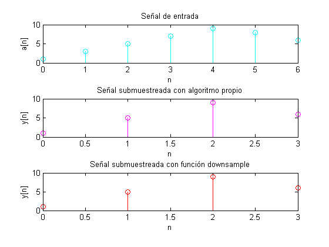
Ejercicio 6
Se tomaron los algoritmos del campus ('DFT.m' y 'graficar.m') y se modificó su implementación para el correcto funcionamiento.
x=[9 2 3 4 6 5*i]; %Secuencia compleja de prueba
[X,k,Re,Im,M,F]=TFD(x);
Verifico el algoritmo diseñado con función predefinida de Matlab fft
% Gráfico de la señal y su TFD n=0:5; figure subplot(3,1,1) stem(n,x) title('Secuencia original') xlabel('n');ylabel('x[n]') subplot(3,1,2) stem(k,X) title('TFD de la secuencia') xlabel('k');ylabel('X[k]') % TFD Matlab Xmatlab=fft(x); subplot(3,1,3) stem(k,Xmatlab) title('fft_M_a_t_l_a_b de la secuencia') xlabel('k');ylabel('X_M_a_t_l_a_b[k]')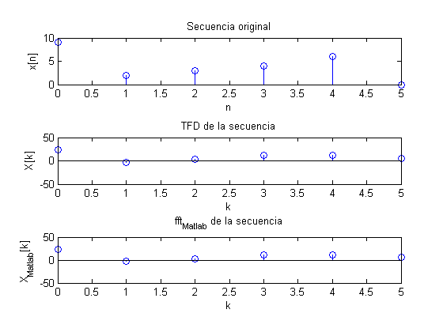
%Gráficos de la parte real e imaginaria de la TFD figure subplot(2,1,1) stem(k,Re) title('TFD parte Real') xlabel('k');ylabel('X_R_e_a_l[k]') subplot(2,1,2) stem(k,Im) title('TFD parte Imaginaria') xlabel('k');ylabel('X_I_m_a_g_i_n_a_r_i_a[k]')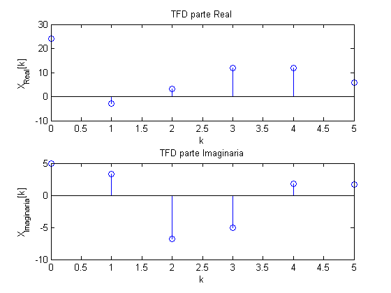
%Gráficos del módulo de la TFD figure subplot(2,1,1) stem(k,M) title('TFD Módulo') xlabel('k');ylabel('|X[k]|') subplot(2,1,2) stem(k,20*log10(M)) title('TFD Módulo en dB') xlabel('k');ylabel('|X_d_B[k]|')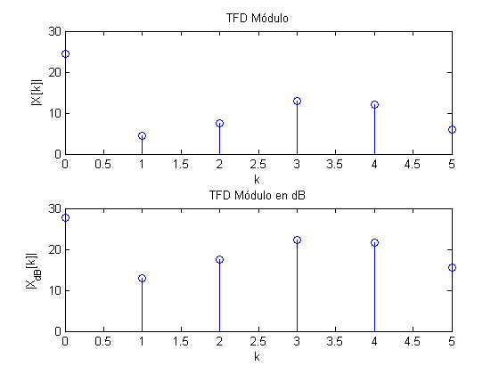
%Gráficos de la fase de la TFD figure subplot(2,1,1) stem(k,F) title('TFD Fase') xlabel('k');ylabel('\phi(X[k])') subplot(2,1,2) stem(k,20*log10(F)) title('TFD Fase en dB') xlabel('k');ylabel('\phi(X[k])_d_B')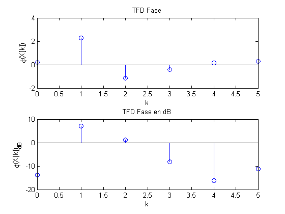
Ejercicio 7
Implementación de la Inversa de la Transformada de Fourier Discreta. Luego, verificación de que, si la TFD provino de una señal real, la parte imaginaria de su antitransformada debe ser 0 para todo n.
X=[9 12 3 8 6 9*i]; %Secuencia compleja de prueba
[x,n,re,im,m,f]=TFDinversa(X);
Gráfico de la TFD y la secuencia antitransformada
k=0:5; figure subplot(3,1,1) stem(k,X) title('TFD') xlabel('k');ylabel('X[k]') subplot(3,1,2) stem(n,x) title('Secuencia antitransformada con TFDinversa') xlabel('n');ylabel('x[n]') % TFD Matlab xmatlab=ifft(X); subplot(3,1,3) stem(n,xmatlab) title('Secuencia antitransformada con ifft_M_a_t_l_a_b') xlabel('n');ylabel('x_M_a_t_l_a_b[n]')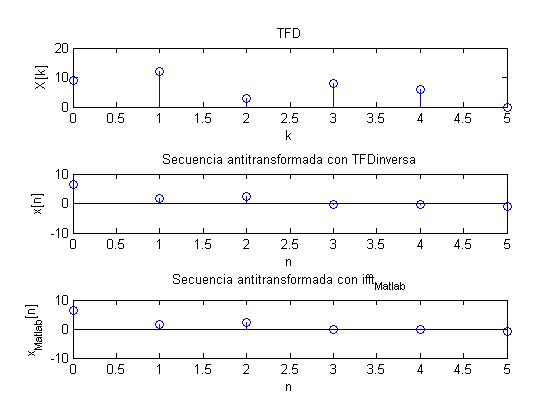
Gráficos de la parte real e imaginaria de la TFDinversa
figure subplot(2,1,1) stem(n,re) title('ITFD parte Real') xlabel('n');ylabel('x_R_e_a_l[n]') subplot(2,1,2) stem(n,im) title('ITFD parte Imaginaria') xlabel('n');ylabel('x_I_m_a_g_i_n_a_r_i_a[n]')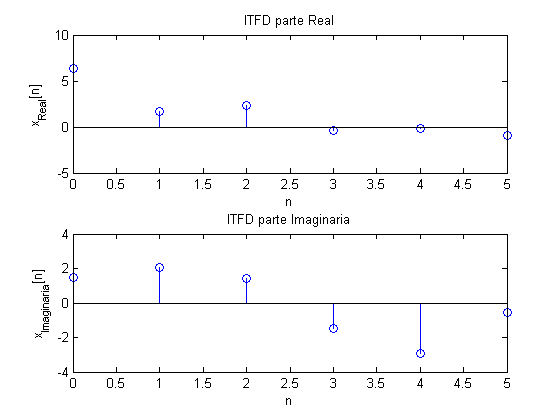
Gráficos de módulo y fase de la TFDinversa
figure subplot(2,1,1) stem(n,m) title('TFDinversa Módulo') xlabel('n');ylabel('|x[n]|') subplot(2,1,2) stem(n,f) title('TFDinversa Fase') xlabel('n');ylabel('\phi(x[n])')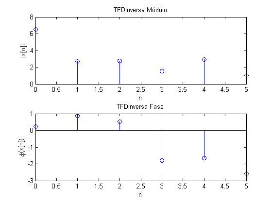
% Verifico que si TFD es real, la parte imaginaria de su antitransformada % debe ser 0 para todo n Xre=[9 10 3 4 6 2]; %Secuencia real de prueba [x2,n2,re2,im2]=TFDinversa(Xre);
Gráficos de la parte real e imaginaria de la TFDinversa real
figure subplot(2,1,1) stem(n2,re2) title('ITFD parte Real') xlabel('n');ylabel('x2_R_e_a_l[n]') subplot(2,1,2) stem(n2,im2) title('ITFD parte Imaginaria=0 para todo n') xlabel('n');ylabel('x2_I_m_a_g_i_n_a_r_i_a[n]')

Ejercicio 8
%a) Da=[1 0.13 0.52 0.3]; %y Pa=[0.16 -0.48 0.48 -0.16]; %x fvtool(Pa,Da)%(b->x, a->y) title('Filtro pasa altos')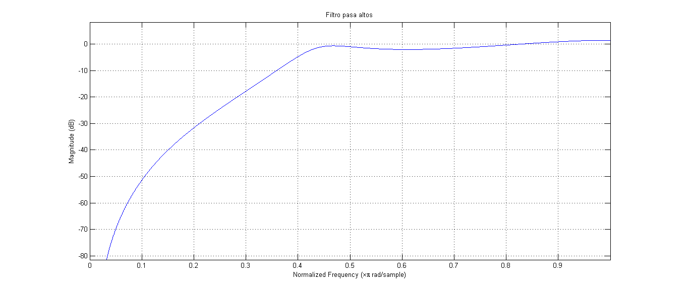
%b) Db=[1 0 -0.268]; Pb=[0.634 0 -0.634]; fvtool(Pb,Db)%(b->x, a->y) title('Filtro pasa banda')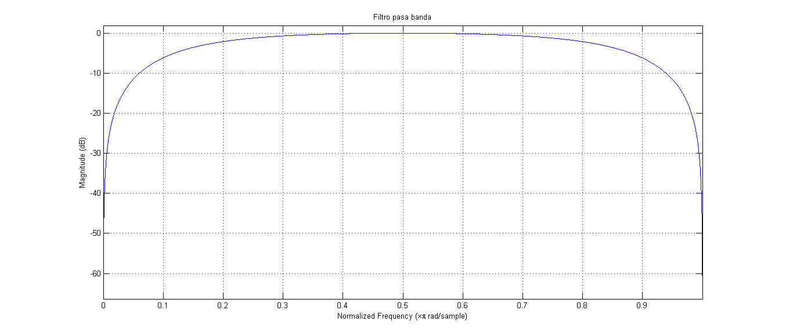
%c) Dc=[1 0 0.268]; Pc=[0.634 0 +0.634]; fvtool(Pc,Dc)%(b->x, a->y) title('Filtro Notch')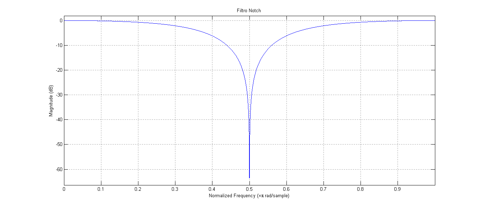
%d) Dd=[10 -5 1]; Pd=[1 -5 10]; fvtool(Pd,Dd)%(b->x, a->y) title('Filtro pasa todo')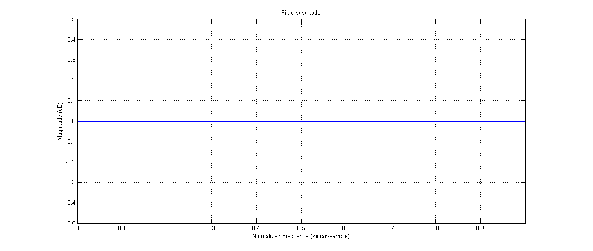
Ejercicio 9
%r: radio %fi: fase %Filtro G=1/(1-2*r*cos(fi)*exp(-z)+r^2*exp(-2*z));
Mismo radio, cambio de fase
%Datos: r=0.8; fi=pi/4 b=[1]; a1=[1 -2*0.8*cos(pi/4) 0.8^2]; fvtool(b,a1,'polezero') title('r=0.8 fi=pi/4') fvtool(b,a1,'freq') title('r=0.8 fi=pi/4') legend('Magnitud','Fase') %Datos: r=0.8; fi=pi/2 a2=[1 -2*0.8*cos(pi/2) 0.8^2]; fvtool(b,a2,'polezero') title('r=0.8 fi=pi/2') fvtool(b,a2,'freq') title('r=0.8 fi=pi/2') legend('Magnitud','Fase') %Datos: r=0.8; fi=7*pi/8 a3=[1 -2*0.8*cos(7*pi/8) 0.8^2]; fvtool(b,a3,'polezero') title('r=0.8 fi=7*pi/8') fvtool(b,a3,'freq') title('r=0.8 fi=7*pi/8') legend('Magnitud','Fase')
Warning: A legend has been added to FVTool without using the LEGEND method. Type help fvtool for more information. Warning: A legend has been added to FVTool without using the LEGEND method. Type help fvtool for more information. Warning: A legend has been added to FVTool without using the LEGEND method. Type help fvtool for more information.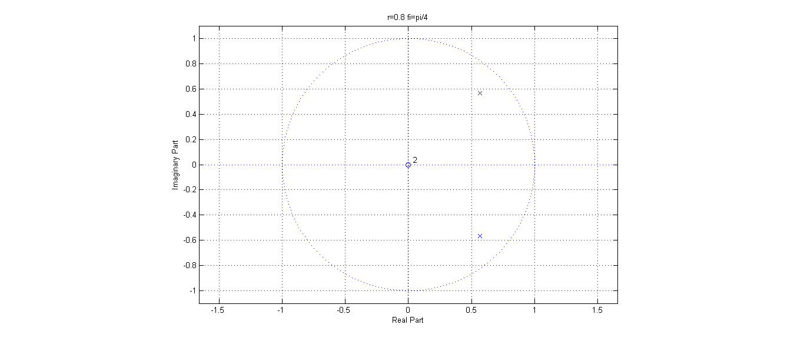 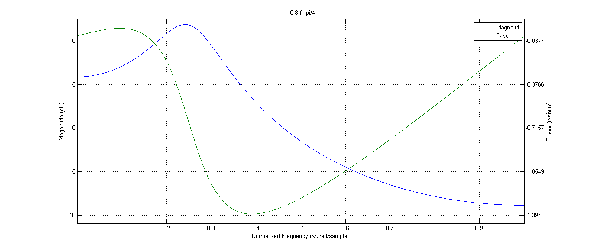 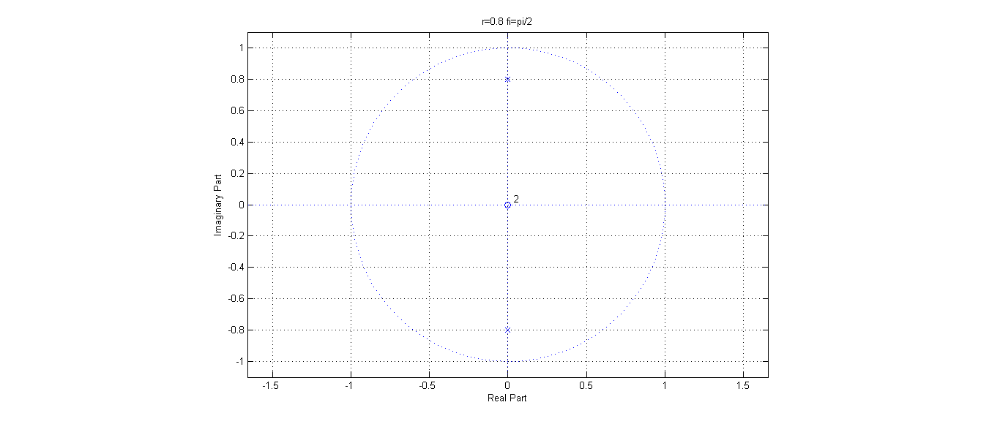 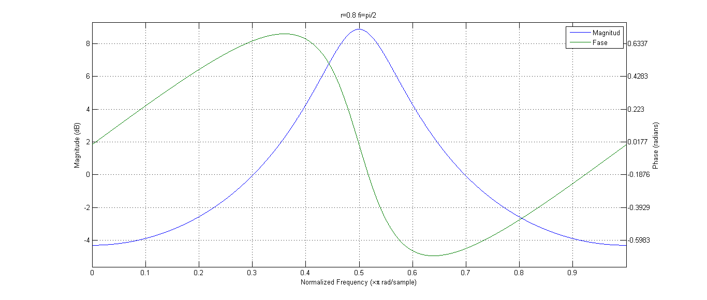


Misma fase, cambio de radio(fi=pi/2; r=0.8;0.6;0.9)
%Datos: fi=pi/2 r=0.8; b=[1]; a4=[1 -2*0.8*cos(pi/2) 0.8^2]; fvtool(b,a4,'polezero') title('r=0.8 fi=pi/2') fvtool(b,a4,'freq') title('r=0.8 fi=pi/2') legend('Magnitud','Fase') %Datos: fi=pi/2 r=0.6; a5=[1 -2*0.6*cos(pi/2) 0.6^2]; fvtool(b,a5,'polezero') title('r=0.6 fi=pi/2') fvtool(b,a5,'freq') title('r=0.6 fi=pi/2') legend('Magnitud','Fase') %Datos: fi=pi/2 r=0.9; a6=[1 -2*0.9*cos(pi/2) 0.9^2]; fvtool(b,a6,'polezero') title('r=0.9 fi=pi/2') fvtool(b,a6,'freq') title('r=0.9 fi=pi/2') legend('Magnitud','Fase')
Warning: A legend has been added to FVTool without using the LEGEND method. Type help fvtool for more information. Warning: A legend has been added to FVTool without using the LEGEND method. Type help fvtool for more information. Warning: A legend has been added to FVTool without using the LEGEND method. Type help fvtool for more information.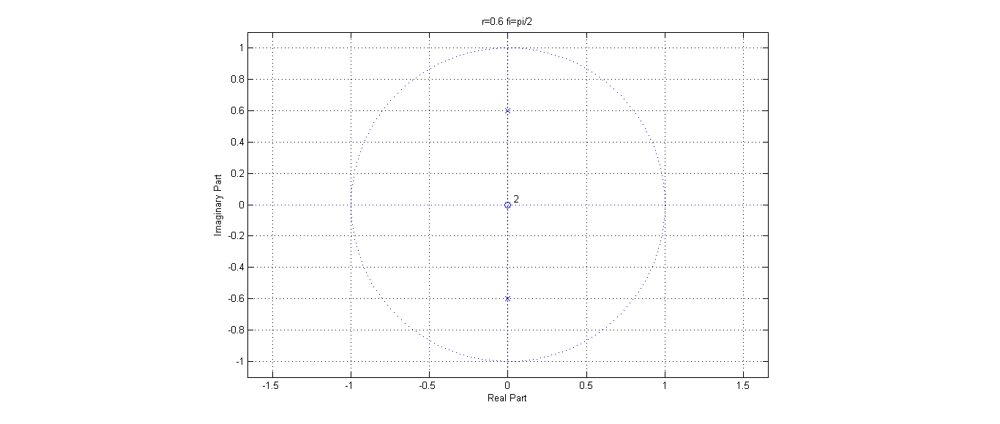

 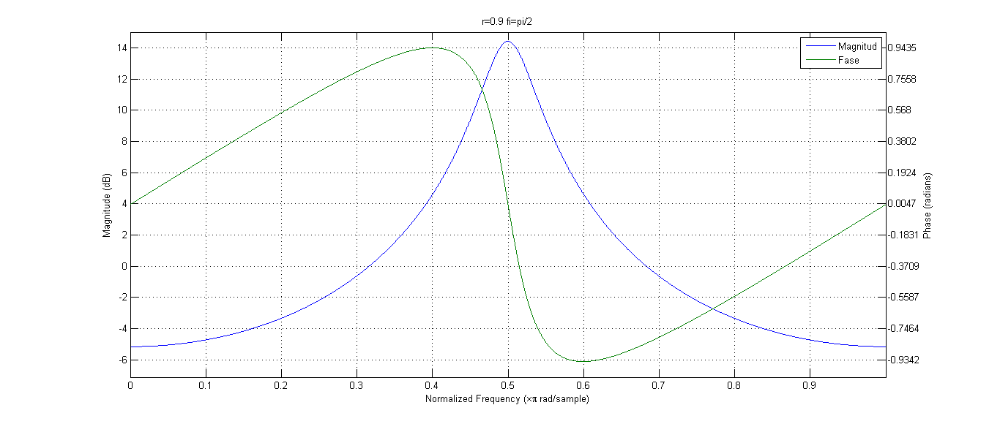
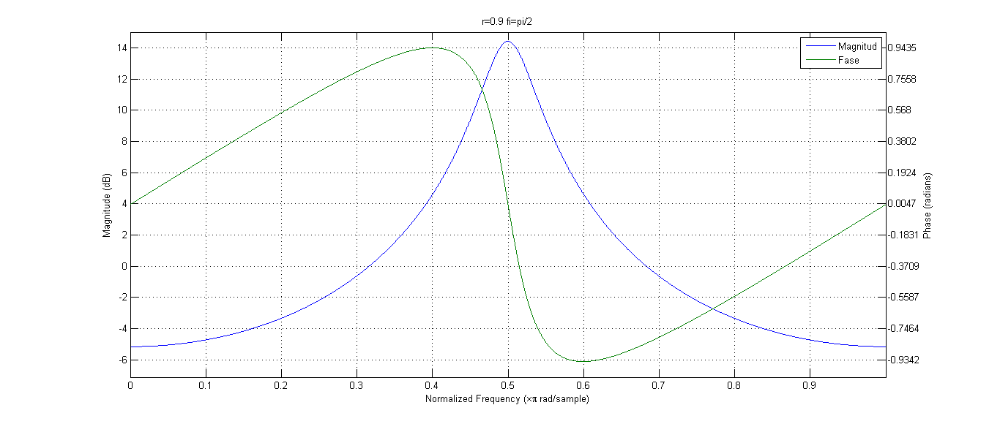 Ejercicio 11
%a) Teniendo en cuenta el Teorema de Nyquist (fs>=2*fmax) y % Ts=1mS (fs=1/1ms=1000Hz), se necesita: fmax=500Hz para evitar el % solapamiento a la entrada del Filtro Notch. %b) w0=2*pi/5; r = 0.7; %Radio definido entre 0<r<1 B=[1 -(exp(-j*w0)+exp(j*w0)) 1]; A=[1 -r*(exp(-j*w0)+exp(j*w0)) r^2]; fvtool(B,A,'freq') title('Respuesta de amplitud y fase') legend('Magnitud','Fase')
Warning: A legend has been added to FVTool without using the LEGEND method. Type help fvtool for more information.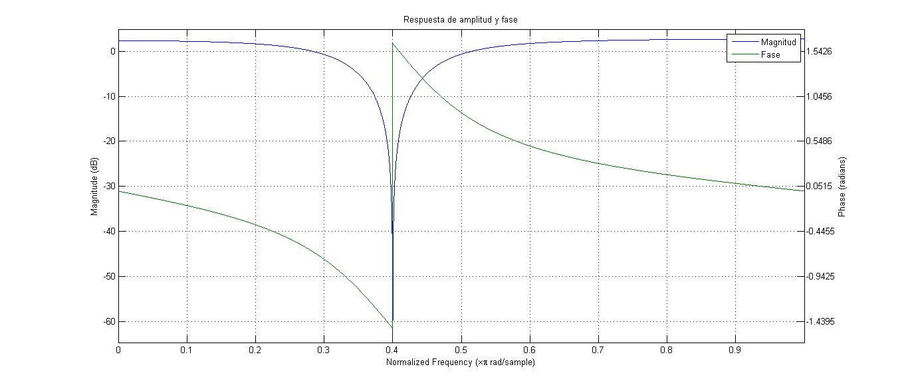
%c) y d) %pi - 500Hz (máx) %x? - 50Hz (componente a eliminar) =>x=0.1*pi %Gráfico de la respuesta de amplitud w02=0.1*pi; %Mismo radio definido anteriormente B2=[1 -(exp(-j*w02)+exp(j*w02)) 1]; A2=[1 -r*(exp(-j*w02)+exp(j*w02)) r^2]; fvtool(B2,A2,'magnitude') title('Respuesta de amplitud del Filtro Notch con w0=pi/10')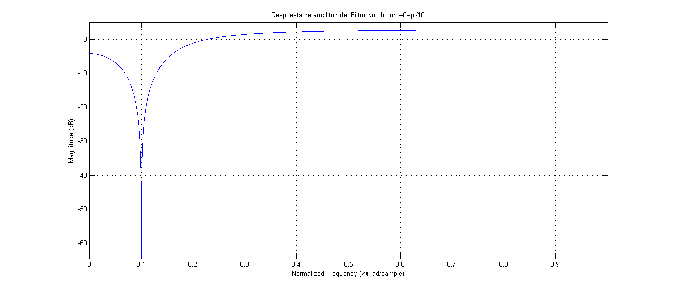
%e)Senoidal de 150 muestras con f=50Hz y fs=1000Hz; N=150;fo=50;fs=1000; w=2*pi*fo/fs; n=1:N; x=sin(w*n); x_filtrada=filter(B2,A2,x); figure subplot(2,1,1) stem(n,x) title('Senoidal sin filtro') xlabel('n');ylabel('x[n]') subplot(2,1,2) stem(n,x_filtrada) title('Senoidal con filtro Notch') xlabel('n');ylabel('x[n]')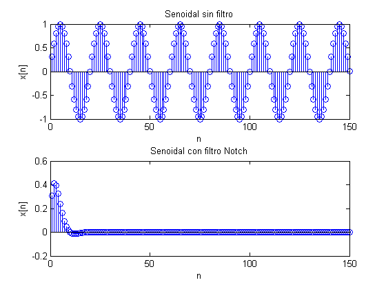
%e)
posicion=Transitorio(x,x_filtrada);
Ts=1/fs;
Duracion=posicion*Ts
Duracion =
0.0110
Ejercicio 12
a=[10 -2 4];b=[1 9 -2];
N=200;
h=impz(b,a,N); %Respuesta al impulso del sistema b/a
Retardo de grupo de la respuesta al impulso
r=Retardo_Grupo(h,N); w=0:(2*pi)/(N-1):2*pi; %Intervalo 0<w<2*pi figure subplot(2,1,1) plot(w,r,'r') title('Retardo de Grupo con función propia') xlabel('w');ylabel('Retardo[w]') % Comparo el algoritmo desarrollado con la función predefinida grpdelay [Gd,W]=grpdelay(b,a,N,'whole'); %'whole' para N puntos en todo %el circulo radio unidad subplot(2,1,2) plot(W,Gd,'m') title('Retardo de Grupo con función grpdelay') xlabel('w');ylabel('Retardo_g_r_p_d_e_l_a_y[w]')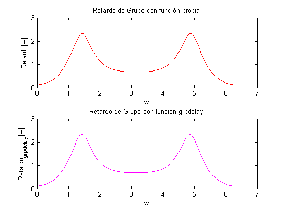
Ejercicio 13
Respuesta al impulso h[n]=delta[n-4]
h=[0; 0; 0; 1]; %Vector columna N=length(h); r=Retardo_Grupo(h,N); n=0:N-1; figure subplot(2,1,1) plot(n,r) title('Retardo de Grupo con función propia') xlabel('n');ylabel('Retardo[n]') xlim([0 3]) [Gd,W]=grpdelay(h,N); subplot(2,1,2) plot(W,Gd) title('Retardo de Grupo con función grpdelay') xlabel('n');ylabel('Retardo_g_r_p_d_e_l_a_y[n]') xlim([0 3])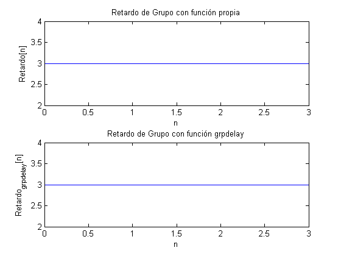
Ejercicio 14
Transformadas Discretas de Fourier de funciones del Ejercicio 8) del TP Nº1. Se visualizan los resultados en Módulo y Fase o Parte Real e Imaginaria.
AMORTIGUADA
[amort,n1]=Amortiguada(50,1,1/100,10,1/300); [X1,k1,Re1,Im1,M1,F1]=TFD(amort); figure subplot(2,2,1) stem(k1,M1) title('TFD Amortiguada - Módulo') xlabel('k');ylabel('|X[k]|') subplot(2,2,2) stem(k1,F1) title('TDF Amortiguada - Fase') xlabel('k');ylabel('\phi(X[k])') subplot(2,2,3) stem(k1,Re1) title('TFD Amortiguada - Parte Real') xlabel('k');ylabel('X[k]_R_e_a_l') subplot(2,2,4) stem(k1,Im1) title('TDF Amortiguada - Parte Imaginaria') xlabel('k');ylabel('X[k]_I_m_a_g_i_n_a_r_i_a')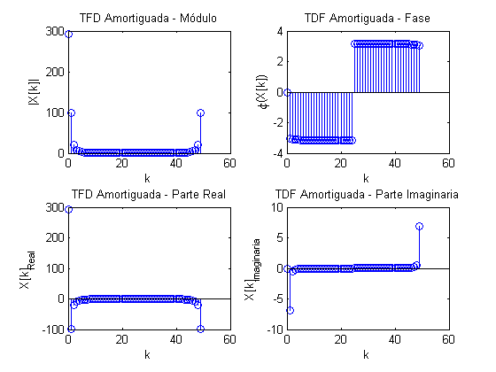
ESCALÓN
[esc,n2]=Escalon_Unitario(20,1,0); [X2,k2,Re2,Im2,M2,F2]=TFD(esc); figure subplot(2,2,1) stem(k2,M2) title('TFD Escalón - Módulo') xlabel('k');ylabel('|X[k]|') subplot(2,2,2) stem(k2,F2) title('TDF Escalón - Fase') xlabel('k');ylabel('\phi(X[k])') subplot(2,2,3) stem(k2,Re2) title('TFD Escalón - Parte Real') xlabel('k');ylabel('X[k]_R_e_a_l') subplot(2,2,4) stem(k2,Im2) title('TDF Escalón - Parte Imaginaria') xlabel('k');ylabel('X[k]_I_m_a_g_i_n_a_r_i_a')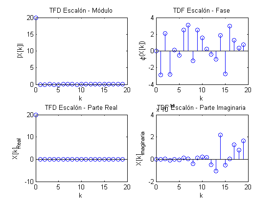
SENOIDAL
[sen,n3]=Senoidal_Discreta(0,40,3,pi/17,0); [X3,k3,Re3,Im3,M3,F3]=TFD(sen); figure subplot(2,2,1) stem(k3,M3) title('TFD Senoidal - Módulo') xlabel('k');ylabel('|X[k]|') subplot(2,2,2) stem(k3,F3) title('TDF Senoidal - Fase') xlabel('k');ylabel('\phi(X[k])') subplot(2,2,3) stem(k3,Re3) title('TFD Senoidal - Parte Real') xlabel('k');ylabel('X[k]_R_e_a_l') subplot(2,2,4) stem(k3,Im3) title('TDF Senoidal - Parte Imaginaria') xlabel('k');ylabel('X[k]_I_m_a_g_i_n_a_r_i_a')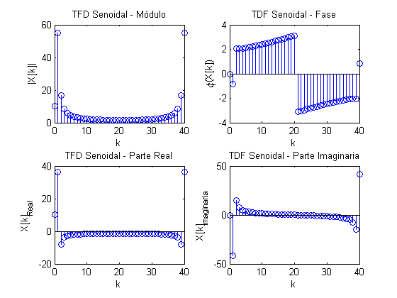
AMPLITUD MODULADA
[am,ti]=Amplitud_Modulada(60,10,5,1,1/200,1/20); [X4,k4,Re4,Im4,M4,F4]=TFD(am); figure subplot(2,2,1) stem(k4,M4) title('TFD Amplitud Modulada - Módulo') xlabel('k');ylabel('|X[k]|') subplot(2,2,2) stem(k4,F4) title('TDF Amplitud Modulada - Fase') xlabel('k');ylabel('\phi(X[k])') subplot(2,2,3) stem(k4,Re4) title('TFD Amplitud Modulada - Parte Real') xlabel('k');ylabel('X[k]_R_e_a_l') subplot(2,2,4) stem(k4,Im4) title('TDF Amplitud Modulada - Parte Imaginaria') xlabel('k');ylabel('X[k]_I_m_a_g_i_n_a_r_i_a')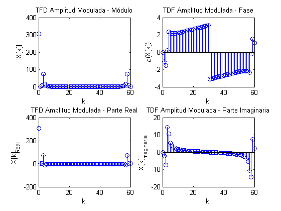
FRECUENCIA MODULADA
[fm,ti2]=Frecuencia_Modulada(60,10,5,1,1/200,1/20); [X5,k5,Re5,Im5,M5,F5]=TFD(fm); figure subplot(2,2,1) stem(k5,M5) title('TFD Frecuencia Modulada - Módulo') xlabel('k');ylabel('|X[k]|') subplot(2,2,2) stem(k5,F5) title('TDF Frecuencia Modulada - Fase') xlabel('k');ylabel('\phi(X[k])') subplot(2,2,3) stem(k5,Re5) title('TFD Frecuencia Modulada - Parte Real') xlabel('k');ylabel('X[k]_R_e_a_l') subplot(2,2,4) stem(k5,Im5) title('TDF Frecuencia Modulada - Parte Imaginaria') xlabel('k');ylabel('X[k]_I_m_a_g_i_n_a_r_i_a')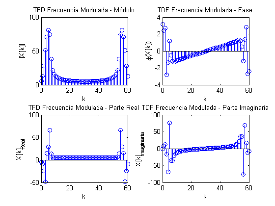
SINC
[sinc,tiempo]=Funcion_Sampling_Sinc(100,10,1/10,2); [X6,k6,Re6,Im6,M6,F6]=TFD(sinc); figure subplot(2,2,1) stem(k6,M6) title('TFD Sinc - Módulo') xlabel('k');ylabel('|X[k]|') subplot(2,2,2) stem(k6,F6) title('TDF Sinc - Fase') xlabel('k');ylabel('\phi(X[k])') subplot(2,2,3) stem(k6,Re6) title('TFD Sinc - Parte Real') xlabel('k');ylabel('X[k]_R_e_a_l') subplot(2,2,4) stem(k6,Im6) title('TDF Sinc - Parte Imaginaria') xlabel('k');ylabel('X[k]_I_m_a_g_i_n_a_r_i_a')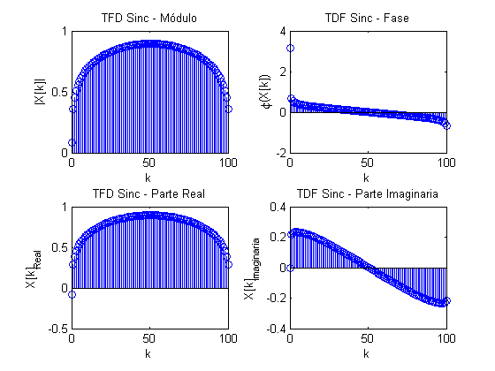
Ejercicio 15
Filtros de Fase Cero: Pasa Bajos, Pasa Altos, Elimina Banda y Pasa Banda.
%Valores de prueba w1=20; w2=40; N=100; w=0:99; % Filtro pasa bajos de fase cero [PBAJOS]=FPBAJOSfc(w1,N); figure subplot(2,2,1) plot(w,PBAJOS) title('Filtro Pasa Bajos de Fase Cero'); xlabel('w');ylabel('|H[w]|');ylim([0 1.2]);xlim([0 99]); %Filtro elimina banda de fase cero [EBANDA]=FEBANDAfc(w1,w2,N); subplot(2,2,2) plot(w,EBANDA) title('Filtro Elimina Banda de Fase Cero'); xlabel('w');ylabel('|H[w]|');ylim([0 1.2]);xlim([0 99]); %Filtro pasa altos de fase cero [PALTOS]=FPALTOSfc(w1,N); subplot(2,2,3) plot(w,PALTOS) title('Filtro Pasa Altos de Fase Cero'); xlabel('w');ylabel('|H[w]|');ylim([0 1.2]);xlim([0 99]); %Filtro pasa banda de fase cero [PBANDA]=FPBANDAfc(w1,w2,N); subplot(2,2,4) plot(w,PBANDA) title('Filtro Pasa Banda de Fase Cero'); xlabel('w');ylabel('|H[w]|');ylim([0 1.2]);xlim([0 99]);

% Genero función de prueba para filtrar fs=1000; fo=50; n=1:N; w0=2*pi*fo/fs; y=sin(w0*n); figure stem(w,y,'m')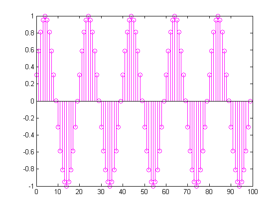
Aplico los filtros
senPB=PBAJOS.*y; senEB=EBANDA.*y; senPA=PALTOS.*y; senPBND=PBANDA.*y;
Grafico los resultados obtenidos
figure subplot(2,2,1) stem(w,senPB) title('Seno con Filtro Pasa Bajos de Fase Cero'); xlabel('w');ylabel('Y[w]'); subplot(2,2,2) stem(w,senEB) title('Seno con Filtro Elimina Banda de Fase Cero'); xlabel('w');ylabel('Y[w]'); subplot(2,2,3) stem(w,senPA) title('Seno con Filtro Pasa Altos de Fase Cero'); xlabel('w');ylabel('Y[w]'); subplot(2,2,4) stem(w,senPBND) title('Seno con Filtro Pasa Banda de Fase Cero'); xlabel('w');ylabel('Y[w]');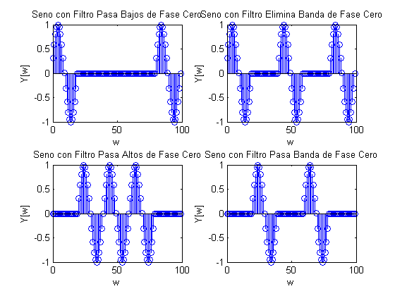
Ejercicio 16
% Filtrado por nivel % Los conponentes de frecuencia de la señal evaluada (espectro de amplitud % de la señal) serán llevados a 0 si no superan un determinado valor L. L=15; %Filtro aquellos valores menores x=[2 3 -3 2 11 1 4.3 -6 6 9 5 4.5]; %Vector de prueba n=0:length(x)-1; [Xmodulo,Xf]=Filtrado_por_Nivel(x,L);
%Grafico los resultados figure subplot(2,1,1) stem(n,Xmodulo) title('fft de la Señal original'); xlabel('n');ylabel('X_O_r_i_g_i_n_a_l[n]'); subplot(2,1,2) stem(n,Xf) title('fft de la Señal filtrada'); xlabel('n');ylabel('X_F_i_l_t_r_a_d_a[n]');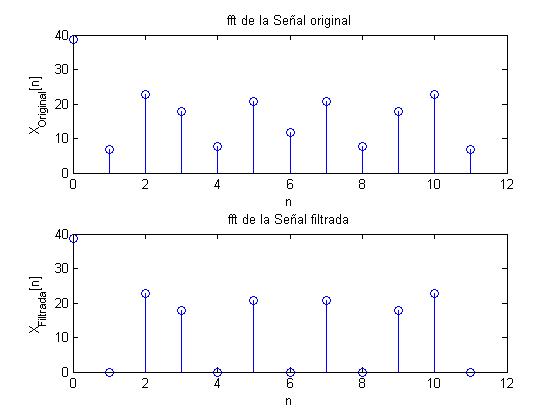
Ejercicio 17
Filtro de nivel programado en el ejercicio anterior a una señal de audio y verificación del efecto de utilizar diferentes niveles para umbralizar.
%Abro archivo de audio y extraigo los datos yaudio=wavread('introBlackDog.wav');
Warning: WAVREAD will be removed in a future release. Use AUDIOREAD instead.
%Tomo sólo una de las columnas y convierto a vector fila (sonido mono) y=yaudio(:,1); y=y'; figure plot(y(1:5000),'m') title('Sonido original'); xlabel('n');ylabel('X_O_r_i_g_i_n_a_l[n]');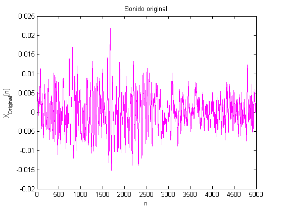
Pruebo el filtrado por distintos niveles
%L=50 L=50; [Xmodulo1,Xf50]=Filtrado_por_Nivel(y,L); xf50=ifft(Xf50); %Antitransformo para obtener la señal filtrada de salida sound(xf50,44100); %Fs=44100Hz Usado en audio % Se logra escuchar lo deseado pero con mucho ruido blanco de fondo. figure subplot(2,1,1) stem(Xf50(1:5000),'r') title('Espectro de la señal para umbral=50') xlabel('n');ylabel('X_L_=_5_0[n]'); subplot(2,1,2) plot(xf50(1:5000),'b') title('Señal filtrada en tiempo para umbral=50') xlabel('t');ylabel('x_L_=_5_0(t)');ylim([-3 3])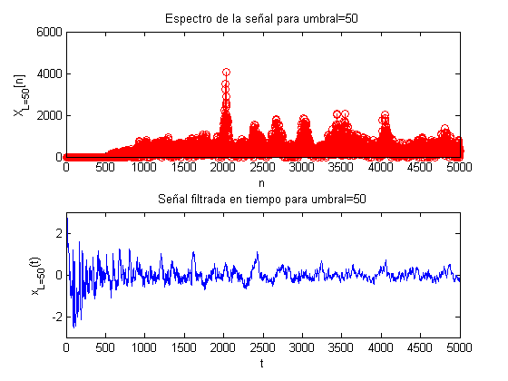
%L=300 L=300; [Xmodulo2,Xf300]=Filtrado_por_Nivel(y,L); xf300=ifft(Xf300); %Antitransformo para obtener la señal filtrada de salida sound(xf300,44100); %Fs=44100Hz Usado en audio % Continúa habiendo ruido blanco de fondo pero éste disminuye en % comparación con el nivel implementado anteriormente figure subplot(2,1,1) stem(Xf300(1:5000),'r') title('Espectro de la señal para umbral=300') xlabel('n');ylabel('X_L_=_3_0_0[n]'); subplot(2,1,2) plot(xf300(1:5000),'b') title('Señal filtrada en tiempo para umbral=300') xlabel('t');ylabel('x_L_=_3_0_0(t)');ylim([-6 6])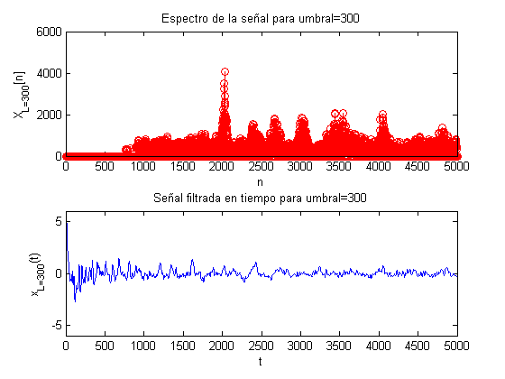
%L=900 L=900; [Xmodulo3,Xf900]=Filtrado_por_Nivel(y,L); xf900=ifft(Xf900); %Antitransformo para obtener la señal filtrada de salida sound(xf900,44100); %Fs=44100Hz Usado en audio % Con este nivel de filtro ya no se oye ruido blanco de fondo, pero se debe % tener en cuenta de que, a partir de cierto valor de umbral se podrían % estar filtrando sonidos deseados. figure subplot(2,1,1) stem(Xf900(1:5000),'r') title('Espectro de la señal para umbral=900') xlabel('n');ylabel('X_L_=_9_0_0[n]'); subplot(2,1,2) plot(xf900(1:5000),'b') title('Señal filtrada en tiempo para umbral=900') xlabel('t');ylabel('x_L_=_9_0_0(t)');